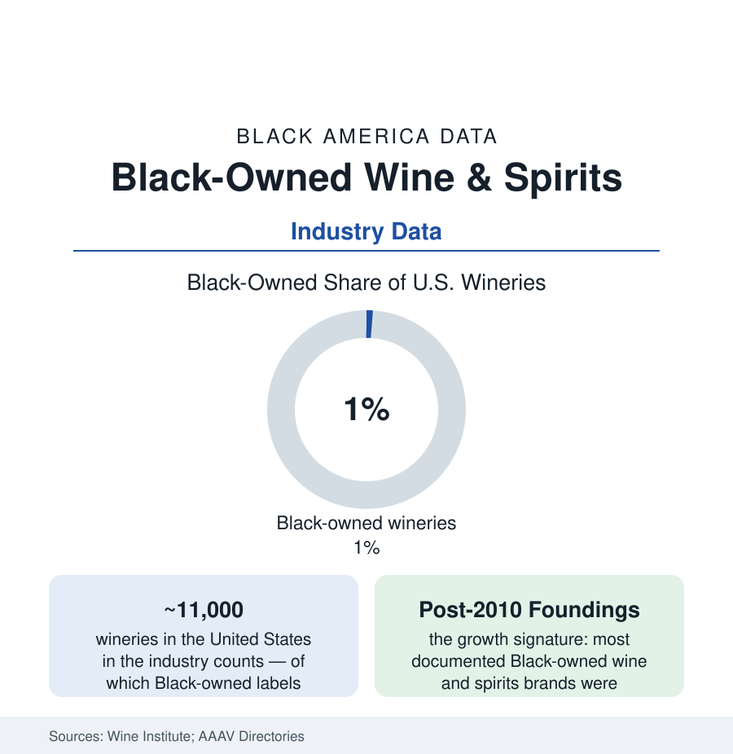

Black Business
Black-Owned Wine and Spirits: One Percent of the Cellar, Building Fast
Black vintners own roughly 1% of America's 11,000 wineries — and the brands founded in the last two decades are rewriting the shelf. The industry census and the growth data.

The American wine industry holds eleven thousand wineries, and the Black-owned share of them is about one percent — a few dozen established labels in the association directories, from Napa estates to urban wineries, plus a spirits tier (bourbon, gin, vodka, and liqueur brands) that has grown faster and louder in the last decade. The sector is small enough to name and young enough that its founding dates cluster in living memory — which makes its data a clean read on what Black entry into a mature, capital-heavy, gatekept consumer industry looks like in real time. This article pours the file.
The Wine Tier: Land, Patience, and the Tasting-Room Door
Wine's economics are agriculture's economics at luxury prices: vineyard land in the prestige appellations prices by the hundreds of thousands per acre, a planting takes years to bear, a vintage takes years to sell — the balance-sheet patience the financing file prices at its steepest. The Black vintner population's documented shape follows from it: estate wineries exist at the top (the Napa and Paso Robles properties of the record — including the largest Black-owned winery operation in the country by case volume in the trade counts), but the sector's center of gravity is the négociant and custom-crush model — buying fruit and renting crush capacity to build a brand without the land — and the urban winery. The history layer runs deeper than the current count suggests: Black winemaking in America predates the republic's wine industry (the enslaved and free Black vintners of the early Virginia and Carolina vineyards in the agricultural record; the post-Repeal Black-owned wineries of the mid-century, largely erased from the standard industry histories and recovered by the current scholarship), and the modern association era (the Association of African American Vintners, founded 2002) built the directory, the symposium, and the scholarship pipeline that made the sector countable — the association's own census work being, characteristically, the data infrastructure as well as the industry.
The Spirits Tier: The Faster Lane
Spirits run on different physics — no vineyard, a recipe and a contract distiller, brand as the asset — and the Black-owned data show it: the spirits tier's brand count has multiplied in the 2010s and 2020s (bourbon brands riding the whiskey boom, including labels built around the industry's founding-era Black distillers — the Nearest Green story moving from archival recovery to a major brand and a foundation in the span of a decade; gin, vodka, tequila, and ready-to-drink labels across the price ladder). The tier's milestones are legible in the trade data: national distribution deals with the major wholesalers (the gate the alcohol three-tier system makes absolute — no distributor, no shelf), celebrity-partnered labels at scale, and the first generations of exits and acquisitions. Its constraint ledger is the three-tier system's own: state-by-state distribution law, the wholesalers' portfolio gatekeeping (whose diversity data the trade press has begun to audit), control-state listings, and the retail shelf economics of a category where the top suppliers' share dwarfs wine's.
The Consumer and the Counter-Institutions
The demand side has its own data: the wine-drinker demographics (Black consumers at roughly a tenth of U.S. wine drinkers in the consumer surveys — a share the industry's marketing historically undershot, the 'Black wine consumer' market studies documenting premium-buying segments the tasting-room culture addressed last), the Black wine-festival and club economy (the national festival circuit and the sorority-and-society wine culture as organized demand), and the sommelier and retail tier (Black sommeliers a nameable handful at the top certification levels — the Court of Master Sommeliers' roster data — staffing the programs that decide what gets poured). The counter-institutions mirror the vintners': the scholarship funds (the association's and the industry foundations' diversity scholarships), the Black wine media (podcasts, publications, and influencer channels constituting a parallel trade press), and the retail initiatives (Black-owned wine shops and their shelf commitments — the 'stock the one percent' logic made literal). The land door has its newest chapter in the agricultural file: Black vineyard-ownership and farm-winery ventures in the emerging regions (the Texas, Virginia, and Midwest appellations where land still prices within reach), the geography of the next census of this sector already being planted.
Reading the Cellar Data
One percent of the wineries, a spirits tier compounding, a consumer base the industry miscounted for a century: the wine and spirits file is small in the census and large in what it demonstrates — that the barriers were never palate or demand, but land, distribution law, and time, all three now being worked by a generation of founders whose brands' founding dates cluster in the last fifteen years. Check the directory again in ten. The count is the fastest-moving in this tab.
More in Black Business
Black-Owned Businesses: Counts, Receipts, and the Representation Gap
About 161,000 Black-owned employer firms and three million solo ventures: how the Census Bureau counts Black business ownership, where firms concentrate, and the gap between population share and business share.
Black Median Net Worth: The Wealth Gap in Federal Reserve Data
The Federal Reserve puts Black median family net worth at $44,900, against $285,000 for White families — about 16 cents on the dollar. The widest gap in economic data.
Black Buying Power: The $1.8 Trillion Consumer Economy
Black buying power is estimated at about $1.8 trillion — larger than the economy of most nations. What the figure measures, who produces it, and what it buys.
Source: Wine Institute and Wines Vines Analytics industry counts; Association of African American Vintners; Silicon Valley Bank wine industry reports; company and trade-press records.